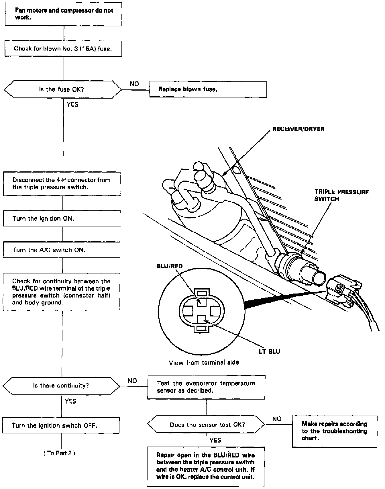
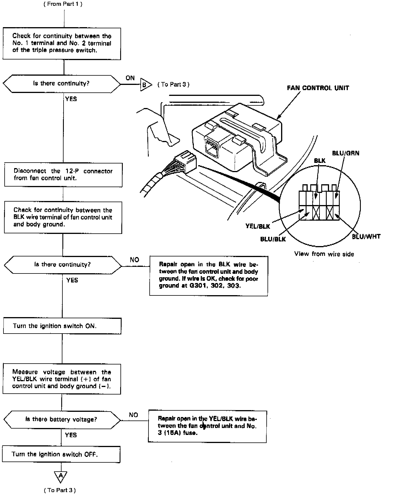
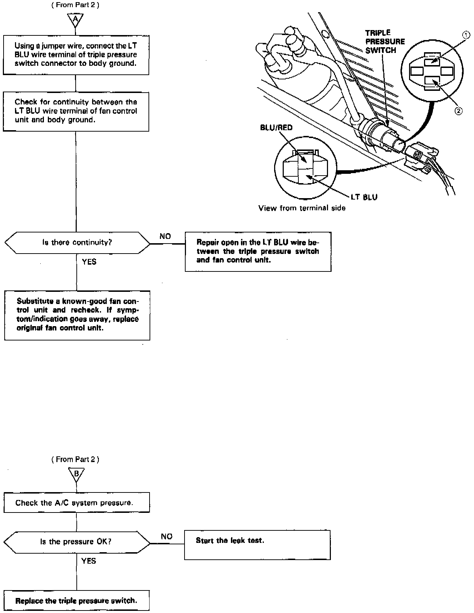

Operation CHARM
: Car repair manuals for everyone.
Home
>>
Acura
>>
1992
>>
Legend Coupe V6-3206cc 3.2L SOHC FI
>>
Repair and Diagnosis
>>
Heating and Air Conditioning
>>
Sensors and Switches - HVAC
>>
Refrigerant Pressure Sensor / Switch
>>
Testing and Inspection
Refrigerant Pressure Sensor / Switch: Testing and Inspection
Fan Motors and A/C Compressor
Fan Motors And Compressor, Part 1 Of 3:

Fan Motors And Compressor, Part 2 Of 3:

Fan Motors And Compressor, Part 3 Of 3:
